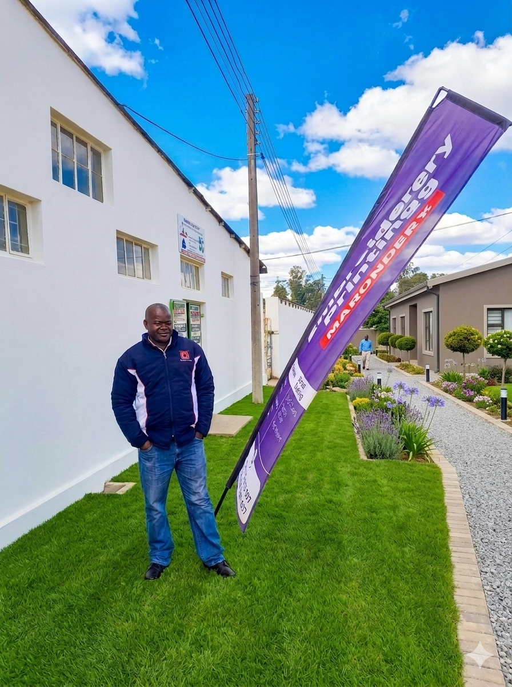

Superior Designs Garments is a family-run embroidery business created from a passion for creativity, quality, and helping people personalise their clothing and accessories. The business was started to support individuals, schools and small businesses that needed affordable and professional embroidery services they could trust.
The idea for Superior Design Garments came from seeing the growing need for embroidered school uniforms, branded business clothing, personalised gifts, and special occasion items. Many people wanted unique garments that looked professional and meaningful, but they struggled to find reliable embroidery services that paid attention to detail.
Embroidery was chosen because it is durable, professional and adds a personal touch that printing cannot always provide. Unlike printed designs that may fade or peel over time, embroidery creates a long-lasting finish that gives garments a high-quality appearance. Superior Design Garments believes that every stitch tells a story and helps bring each customer’s vision to life.
Superior Design Garments is committed to providing high-quality embroidery and personalised garment services for businesses, schools, special occasions, and individuals.We aim to deliver professional workmanship, excellent customer service, and customised designs that make every garment meaningful, memorable, and something our customers can wear with pride.
We enjoy bringing unique ideas to life through personalised embroidery and custom designs.
We take pride in producing neat, durable, and high-quality embroidery on every garment.
We carefully focus on every stitch, design, and garment to ensure the best possible result.
We put our customers first by listening to their needs, providing friendly service, and ensuring they are happy with the final product.
We believe in being dependable, meeting deadlines, and delivering orders on time.
We operate honestly, professionally, and with respect for every customer and project.